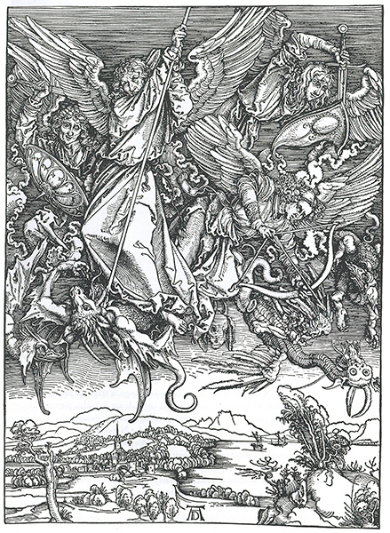

17
EL CURSO DEL NUEVO APRENDIZAJE
Alemania y Países Bajos, primera mitad del siglo XVI
Los grandes logros e innovaciones de los maestros italianos del Renacimiento produjeron profunda impresión en las gentes de más al norte de los Alpes. Todo el que se interesó por el renacer de la cultura llegó a acostumbrarse a dirigir sus miradas hacia Italia, donde se habían descubierto los tesoros de la antigüedad clásica. Sabemos muy bien que en arte no puede hablarse de progreso en el sentido en que de él hablamos respecto al conocimiento científico. Una obra de arte gótica puede ser tan grande como otra del Renacimiento. Sin embargo, tal vez sea comprensible que a las gentes de aquella época, que estuvieron en contacto con las obras maestras meridionales, su propio arte les pareciera de pronto trasnochado y pasado de moda. Existían tres aportaciones tangibles de los maestros italianos que tomarían por norma: el descubrimiento de la perspectiva matemática, el conocimiento de la anatomía científica —y con él, el de la perfecta representación del cuerpo humano— y la exhumación de las formas clásicas en arquitectura, que parecieron en aquella época significar lo más bello y elevado.
Es un sugestivo espectáculo contemplar las reacciones de las tradiciones y los diversos artistas ante el choque con estos nuevos conocimientos, y ver cómo se ratificaron, o, lo que también aconteció, cómo sucumbieron ante lo nuevo, según la fortaleza de sus temperamentos y la profundidad de sus visiones. La posición más difícil acaso fuera la de los arquitectos. Tanto el sistema gótico, al cual estaban acostumbrados, como el renacer de los edificios antiguos eran, al menos en teoría, completamente lógicos y coherentes, pero tan distintos entre sí en propósitos y espíritu como dos estilos puedan serlo. Tuvo que pasar, pues, largo tiempo antes de que la nueva modalidad arquitectónica fuese adoptada al norte de los Alpes. Cuando así empezó a suceder, ello se debió con frecuencia a la insistencia de príncipes y señores de la nobleza que habían visitado Italia y deseaban estar al día. Aun así, los arquitectos a menudo se amoldaban tan sólo superficialmente a los requerimientos del nuevo estilo. Demostraban sus conocimientos de las nuevas ideas colocando una columna aquí y un friso allí; en otras palabras, añadiendo algunas de las formas nuevas a su caudal de motivos decorativos. Frecuentemente, el cuerpo del edificio permanecía intacto. Existen, por ejemplo, iglesias en Francia, Inglaterra y Alemania en las que los pilares que sostienen la bóveda se han transformado superficialmente en columnas, añadiéndoseles capiteles, o en las que los ventanales góticos han sido ejecutados con tracerías, pero el arco puntiagudo ha dado paso al redondo (ilustración 218). Existen claustros normales sostenidos sobre fantásticas columnas, castillos erizados de torrecillas y arbotantes, pero adornados con detalles clásicos, portadas de casas consistoriales con imitaciones en madera de frisos antiguos (ilustración 219). Un artista italiano, convencido de la perfección de las reglas clásicas, probablemente se habría apartado con horror de todos esos aportes; pero si nosotros no los medimos según un criterio académico pedante, admiraremos con frecuencia la inventiva y la agudeza con que han sido entremezclados esos estilos incongruentes.
218 Pierre Sohier, Coro de la iglesia de St.-Pierre, Caen, 1518-1545. Gótico transformado.
219 Jan Wallot y Christian Sixdeniers, La antigua Cancillería (Le Greffe), Brujas, 1535-1537. Edificio del Renacimiento nórdico.
Las cosas fueron distintas en cuanto a pintores y escultores se refiere, porque para ellos no se trataba de apoderarse de unas ciertas formas definidas, tales como columnas, arcos y otros pormenores. Solamente pintores de segundo orden podían contentarse con tomar en préstamo una figura o actitud de un grabado italiano que hubiera llegado hasta ellos. Cualquier artista auténtico estaba obligado a sentir la necesidad de comprender enteramente los nuevos principios de su arte y a conformar su mente en función de la aplicación de los mismos. Este dramático proceso puede ser estudiado en la obra del más grande de los artistas alemanes, Alberto Durero (1471-1528), quien, a lo largo de su vida, tuvo plena conciencia de su vital importancia para el futuro del arte.
Alberto Durero era hijo de un destacado orfebre proveniente de Hungría y establecido en la floreciente ciudad de Nuremberg. Ya de niño, el pequeño Durero reveló una asombrosa disposición para el dibujo —se han conservado algunas de sus obras de entonces—, ingresando como aprendiz en el taller más importante de retablos e ilustraciones de grabados en madera, perteneciente al maestro nuremburgués Michel Wolgemut. Concluido su aprendizaje, Durero siguió la costumbre de los artesanos medievales y anduvo de un lado para otro como oficial para ampliar sus perspectivas y encontrar algún sitio en el que establecerse. Fue intención de Durero visitar el taller del grabador más importante de la época, Martin Schongauer, pero cuando llegó a Colmar se encontró con que el maestro había fallecido unos meses antes. No obstante, permaneció con los hermanos de Schongauer, que se habían puesto al frente del taller, marchando a continuación a Basilea, en Suiza, que era entonces un centro del saber y del comercio de libros. En este lugar realizó grabados en madera para ilustraciones, trasladándose luego, a través de los Alpes, al norte de Italia, abriendo bien los ojos en el curso de sus jornadas, pintando acuarelas de los pintorescos lugares de los valles alpinos y estudiando las obras de Mantegna. Cuando regresó a Nuremberg para casarse y abrir su taller propio, se hallaba en posesión de todos los conocimientos técnicos que un artista nórdico podía esperar adquirir en el sur. Prontamente demostró que poseía algo más que un simple conocimiento técnico de su difícil arte, ese sentir e imaginación intensos tan sólo peculiares de los grandes artistas. Una de sus primeras grandes obras fue una serie de grabados en madera para ilustrar el Apocalipsis de san Juan. Tuvo un éxito extraordinario. Las terroríficas visiones de los horrores del juicio final y de las señales y portentos que han de precederle no habían sido plasmados nunca con tanta fuerza e intensidad. Sin duda, la imaginación de Durero y el interés del público alimentaban el general desasosiego y la hostilidad contra las instituciones de la Iglesia, tan frecuentes en Alemania hacia la terminación del medievo y que estallaron, al cabo, en la Reforma de Lutero. Para Durero y su público, las visiones sobrenaturales de los acontecimientos apocalípticos adquirían una especie de interés propio del lugar común, pues eran muchos los que esperaban que estas profecías se cumplieran en el transcurso de sus vidas. La figura 220 muestra una de tales ilustraciones sobre el Apocalipsis (12, 7-8):
Entonces se entabló una batalla en el cielo: Miguel y sus Ángeles combatieron con el Dragón. También el Dragón y sus Ángeles combatieron, pero no prevalecieron y no hubo ya en el cielo lugar para ellos.
Para representar este trascendental momento, Durero dejó a un lado todas las actitudes tradicionales que una y otra vez se habían empleado para representar, como espectáculo fácil y elegante, la lucha del héroe celeste contra su mortal enemigo. El san Miguel de Durero no afecta ninguna postura. Está luchando inexorablemente. Emplea ambas manos en un supremo esfuerzo para hundir su gran lanza en el cuello del dragón, y su poderoso ademán domina toda la escena. En torno a él están sus huestes, otros ángeles bélicos combatiendo con arcos y espadas contra los diabólicos monstruos, cuyas fantásticas apariencias desafían toda descripción. Bajo este campo de batalla celestial hay un paisaje sereno y reposado con la famosa firma de Durero.

220 Alberto Durero, San Miguel luchando contra el dragón, 1498. Grabado en madera, 39,2 x 28,3 cm.
Pero aunque Durero demostró ser un maestro en lo fantástico y visionario, un verdadero heredero de aquellos artistas góticos que crearon los pórticos de las grandes catedrales, no quedó contento con esta realización. Sus estudios y apuntes revelan que igualmente era su propósito contemplar la belleza de la naturaleza y copiarla con tanto ahínco y fidelidad como hubiera hecho cualquier artista, desde que Jan van Eyck mostrase a los artistas nórdicos que su tarea consistía en reflejar la naturaleza. Algunos de estos estudios de Durero se han hecho famosos; por ejemplo, su liebre (ilustración 9), o su acuarela de unas matas de hierbas (ilustración 221). Parece ser que Durero se esforzó en conseguir esta perfecta maestría en la imitación de la realidad, no tanto como fin en sí sino como medio para ofrecer una visión verista de los temas sagrados que tuvo que representar en sus cuadros, estampas y grabados.
221 Alberto Durero, Hierbas en un prado, 1503. Acuarela, plumilla y tinta, y lápiz y aguada sobre papel, 40,3 x 31,1 cm; Galería Albertina, Viena.
La misma paciencia que le permitió realizar esos apuntes hizo de él el grabador nato, incansable en añadir pormenor sobre pormenor hasta construir un pequeño mundo verdadero en el espacio de su lámina de cobre. En su Natividad (ilustración 222), que realizo en 1504 (esto es, hacia la época en que Miguel Ángel asombraba a los florentinos exhibiendo su conocimiento del cuerpo humano), Durero reemprendió el tema que Schongauer (ilustración 185) había representado en su delicioso grabado, aprovechando ya la ocasión de presentar las toscas paredes del arruinado establo con especial fervor. Se diría, a primera vista, que éste fue el tema principal para Durero. El viejo corral de una granja con su argamasa hendida y sueltos ladrillos, su pared rota por la que sobresalen los árboles, sus maderas destartaladas haciendo las veces de tejado, sobre las cuales anidan los pájaros, está concebido y expresado con tanto sosiego y contemplativa paciencia que advertimos cuánto debió de complacerle al artista la idea del pintoresco y viejo edificio. Comparadas con él, las figuras parecen, en realidad, pequeñas y casi insignificantes: María, que ha buscado albergue bajo el viejo cobertizo, está arrodillada ante el Cristo niño, y José anda atareado sacando agua del pozo y vertiéndola con cuidado en un estrecho recipiente. Hay que mirar atentamente para descubrir, en el fondo, a uno de los pastores que vienen a adorar, y casi se necesita una lente de aumento para descubrir en el cielo al ángel tradicional que anuncia las gozosas nuevas al mundo. Y sin embargo, nadie podría colegir seriamente que Durero no tratara más que de ostentar su destreza en la representación de unas viejas paredes agrietadas. Esta granja vieja y en desuso, con sus humildes visitantes, posee tal atmósfera de paz idílica que nos lleva a considerar el milagro de la natividad con la misma devota meditación con que fue realizando el grabado. En estampas como ésta, Durero parecía haber llevado a su perfección el desarrollo del arte gótico a partir del momento en que éste se volvió hacia la imitación de la naturaleza. Pero, al propio tiempo, su espíritu forcejeaba con las nuevas orientaciones dadas al arte por los artistas italianos.
222 Alberto Durero, Natividad, 1504. Grabado, 18,5 x 12 cm.
Existía una de ellas que el arte gótico casi había excluido y que ahora se adelantó al primer plano: la representación del cuerpo humano según aquella belleza ideal establecida por el arte clásico.
En este punto, Durero descubrió en seguida que cualquier mera imitación de la naturaleza visible, aunque estuviera hecha tan solícita y devotamente como las figuras de Adán y Eva de Van Eyck (ilustración 156), nunca sería suficiente para producir la inaprehensible calidad de la belleza que distinguía a las obras de arte meridionales. Rafael, al enfrentarse con este problema, aludió a «una cierta idea» de lo bello que había hallado en su propia mente, la idea que había asimilado durante años de estudio de la escultura clásica y de modelos bien conformados. Para Durero, no era ésta una proposición sencilla. No sólo sus ocasiones de estudio fueron menos amplias, sino que carecía de una sólida tradición o de un seguro instinto que le guiara en tales cuestiones. Así, tuvo que buscar una fórmula digna de confianza, es decir, una regla adecuada que le explicara cómo lograr la belleza en la forma humana; y creyó hallar esta regla en las enseñanzas de los textos de arte clásicos acerca de las proporciones del cuerpo humano. Sus expresiones y mediciones eran un tanto oscuras, pero Durero no se amilanó ante tales inconvenientes. Intentó, como dijo él mismo, dar a la vaga práctica de sus antepasados (que crearon obras vigorosas sin un conocimiento claro de las reglas del arte) unos cimientos sólidos y transmisibles. Resulta conmovedor observar a Durero tanteando diversas normas de proporción, verle distender de propio intento la forma humana dibujando cuerpos alargados o ensanchados con objeto de descubrir el equilibrio y la armonía perfectos. Entre los primeros resultados de tales estudios, en los que se ocupó durante todo el transcurso de su vida, se encuentra el grabado Adán y Eva, personajes en los que aplicó todas sus nuevas ideas de belleza y armonía, y que firmó orgullosamente con su nombre y apellidos en latín: Albertus Durer Noricus faciebat 1504 (Alberto Durero de Nuremberg hizo [este grabado] en 1504) (ilustración 223).
No nos resulta fácil advertir de inmediato lo que yace en el fondo de este grabado. El artista se está expresando en un lenguaje menos familiar para él que el empleado en nuestro ejemplo anterior. Las formas armónicas a las que llegó tras diligentes comprobaciones con regla y compás no son tan convincentes y bellas como las de sus modelos clásicos e italianos. Hay algún ligero indicio de artificialidad no sólo en esas formas y en sus actitudes, sino también en lo simétrico de la composición; pero esta leve sensación de forzamiento desaparece tan pronto como advertimos que Durero no había abandonado su yo auténtico para servir a nuevos ídolos, tal como otros menos artistas hicieron. Cuando nos introduce en el jardín del Edén, donde el ratón hace buenas migas con el gato, donde el ciervo, el toro, el conejo y el loro no se asustan ante los pasos del hombre, cuando penetramos con la mirada en el bosque donde crece el árbol de la sabiduría, y vemos a la serpiente dándole a Eva el fruto fatal mientras Adán abre su mano para recibirlo, y cuando advertimos cómo se ha esforzado Durero en perfilar los cuerpos, haciendo que destaquen sobre la oscura mancha del bosque con sus rugosos árboles, llegamos a admirar el primer serio intento de trasplantar los ideales meridionales a suelo nórdico.
223 Alberto Durero, Adán y Eva, 1504. Grabado, 24,8 x 19,2 cm.
No obstante, Durero no se contentaba fácilmente. Un año después de estampar este grabado, marchó a Venecia para ensanchar sus horizontes y acrecentar sus conocimientos acerca de los secretos del arte meridional. La llegada de un rival tan eminente no fue del todo bien recibida por los artistas venecianos de segundo orden, por lo que Durero escribió a un amigo:
Tengo muchos amigos entre los italianos que me aconsejan no comer ni beber con sus pintores. Muchos son mis enemigos; copian mis obras en las iglesias y donde pueden encontrarlas; y después critican mi obra y dicen que no está en la línea de los clásicos y, por consiguiente, que no es buena. Pero Giovanni Bellini hizo grandes elogios de mí ante muchos nobles. Deseó tener algo realizado por mí, y él mismo vino a pedirme que le hiciera alguna cosa, que lo pagaría bien. Todos me lo encomian por devoto, lo que hace que me guste. Es muy viejo, y aún es el mejor en pintura.
En una de estas cartas enviadas desde Venecia es donde Durero escribió la sorprendente frase que revela cuán agudamente percibió el contraste de su posición de artista dentro de la rígida disciplina de los gremios de Nuremberg con la libertad de sus colegas italianos: «¿Cómo puedo temblar ante el sol? —escribió—. Aquí soy señor; en casa, un parásito». Pero la última parte de la vida de Durero no corroboró estas aprensiones. Ciertamente, en un principio tuvo que regatear y discutir, como cualquier artesano, con los ricos burgueses de Nuremberg y de Frankfurt. Tuvo que prometerles no emplear sino colores de la mejor calidad en sus paneles y aplicarlos sobre ellos en varias capas. Pero poco a poco se extendió su fama, y el emperador Maximiliano, que creía en la importancia del arte como instrumento de glorificación, se aseguró los servicios de Durero para cierto número de proyectos ambiciosos. Cuando Durero, a la edad de cincuenta años, visitó los Países Bajos, fue, en efecto, recibido como un señor. Él mismo, profundamente emocionado, relató cómo le homenajearon los pintores de Amberes con un banquete de gran solemnidad en el salón de su gremio, «y cuando fui conducido a la mesa, la gente se levantó, a ambos lados, como si acompañaran a un gran señor, y entre ellos había muchas personas de calidad, todas las cuales inclinaron la cabeza en la más humilde de las actitudes». Hasta en los países del norte los grandes artistas eliminaron el esnobismo que había hecho que se despreciara a los hombres que trabajaban con sus manos.
Un hecho raro y enigmático es que el único pintor alemán que puede ser comparado con Durero por su grandeza y su poder artístico ha sido olvidado hasta el punto que ni siquiera podemos estar seguros de su nombre. Un escritor del siglo XVII, que cita de manera un tanto confusa a un Matthias Grünewald de Aschaffenburgo, hace una encendida descripción de algunos cuadros de este «Correggio alemán», como le llama; en adelante, estos cuadros y otros que debió pintar el mismo gran artista son usualmente rotulados: «Grünewald». Sin embargo, ningún testimonio ni documento de la época menciona a pintor de tal apellido, por lo que debemos considerar como lo más probable que el artista ocultara los datos a él relativos. Dado que alguno de los cuadros atribuidos al maestro ostentan las iniciales M. G. N., y como se conoce un pintor llamado Mathis Gothardt Nithardt, que vivió y trabajó cerca de Aschaffenburgo, en Alemania, siendo aproximadamente contemporáneo de Durero, ahora se cree que éste, y no Grünewald, fue el verdadero nombre del gran maestro. Pero esta teoría no nos ayuda mucho, puesto que tampoco conocemos gran cosa acerca del maestro Mathis. En suma, mientras que Durero se halla ante nosotros como un ser humano vivo, cuyas costumbres, gustos, creencias y maneras de expresarse nos son íntimamente conocidos, Grünewald constituye para nosotros un misterio tan grande como el de Shakespeare. No es fácil que esto se deba enteramente a una simple coincidencia. La razón de que sepamos mucho acerca de Durero reside precisamente en que éste se consideró a sí mismo como un innovador del arte de su país; reflexionó sobre lo que realizaba y sobre sus motivos, tomó notas de sus viajes e indagaciones, y escribió libros para adoctrinar a su propia generación. No hay indicio alguno de que el pintor de las obras maestras «Grünewald» tuviera esta visión de sí mismo. Antes al contrario, las obras que de él poseemos son retablos de tipo tradicional en iglesias más o menos importantes de provincias, incluyendo un gran número de laterales para un gran altar en la localidad alsaciana de Isenheim (el llamado altar de Isenheim). Sus obras no proporcionan ninguna indicación de que él se esforzase, como Durero, en llegar a ser algo distinto de un simple artesano, ni que se sintiera embarazado por las tradiciones establecidas respecto al arte religioso, tal como se había desarrollado en la última época del arte gótico. Aunque no dejaba de estar familiarizado con algunos de los grandes descubrimientos del arte italiano, tan sólo hizo uso de ellos en la medida en que se acomodaban a sus ideas acerca de lo que debía crear en arte. Su criterio era firme al respecto. Para él, el arte no consistía en la indagación de las leyes ocultas de la belleza, pues su única finalidad era la de todo el arte religioso del medievo: proporcionar un sermón gráfico, proclamando las sacrosantas verdades tal como eran enseñadas por la Iglesia. La tabla central del altar de Isenheim (ilustración 224) revela que sacrificó de buen grado cualquier consideración de otra índole ante esta finalidad preponderante. No hay ni rastros del concepto de belleza profesado por los artistas italianos en esta representación cruel y austera del Cristo crucificado. Al modo de un predicador en semana santa, Grünewald no prescindió de nada para familiarizar a los públicos con los horrores de esta escena de sufrimiento: el cuerpo moribundo del Cristo se halla contorsionado por la tortura de la cruz; las púas de los flagelos perduran en las heridas ulceradas que cubren toda la figura; la oscura sangre coagulada contrasta fuertemente con el verde exangüe del cuerpo. Por sus rasgos y el ademán impresionante de sus manos, el Cristo nos habla de la significación de su calvario. Su dolor se halla reflejado en el grupo tradicional compuesto por María, con el vestido de la viudez, desmayándose en los brazos de san Juan Evangelista, a cuyo cuidado la encomendara el Cristo, y la figura más reducida de María Magdalena, con su tarro de ungüento, retorciéndose las manos de dolor. Al otro lado de la cruz está la recia figura de san Juan Bautista con el antiguo símbolo del cordero llevando la cruz y derramando su sangre en el cáliz de la sagrada comunión. Con ademán vigoroso e imperativo, san Juan señala al Cristo, y sobre él se hallan escritas las palabras que pronuncia, según el evangelio de san Juan (3, 30): «Es preciso que él crezca y que yo disminuya.»
No hay duda de que el artista quiso hacer que quien contemplase el altar meditara acerca de estas palabras que destacó fuertemente con el ademán de la mano de san Juan Bautista. Quizá deseara incluso hacernos ver cómo es preciso que el Cristo crezca y nosotros disminuyamos, pues en este cuadro, en el que la realidad parece haber sido expresada con todo su horror sin paliativos, hay un rasgo irreal y fantástico: las figuras difieren sobremanera en tamaño. No necesitamos más que comparar las manos de María Magdalena, postrada bajo la cruz, con las del Cristo, para advertir claramente la notable diferencia que existe entre las dimensiones de unas y otras. Evidentemente, en tales aspectos Grünewald rechazó las normas del arte tal como se desarrolló a partir del Renacimiento, volviendo deliberadamente a los principios de los pintores primitivos y medievales que alteraban el tamaño de sus figuras de acuerdo con la importancia que tuvieran dentro del cuadro. Del mismo modo que sacrificó la belleza agradable en aras del mensaje espiritual del altar, desdeñó también las nuevas exigencias de corrección en las proporciones, toda vez que ello le ayudaba a expresar la verdad mística de las palabras de san Juan.
224 Grünewald, La crucifixión, 1515. Retablo del altar de Isenheim; óleo sobre tabla, 269 x 307 cm; Museo de Unterlinden, Colmar.
La obra de Grünewald nos recuerda así, una vez más, que un artista puede ser extraordinario sin ser progresista, ya que la grandeza del arte no estriba en nuevos descubrimientos. Que Grünewald se hallaba familiarizado con estos últimos lo demuestra claramente cuando necesita servirse de ellos para expresar lo que desea. Y del mismo modo que empleó su pincel para representar el cuerpo supliciado y muerto del Cristo, lo emplearía también en otra tabla para expresar su transfiguración al resucitar en una aparición sobrenatural, bañado en luz divina (ilustración 225). Es difícil describir este cuadro porque, como otras veces, hay mucho en él que depende del color. Parece como si el Cristo emergiese del sepulcro, dejando un rastro de luz radiante, reflejando la mortaja con que se le había cubierto el cuerpo los rayos luminosos del halo. Existe un profundo contraste entre la elevación del Cristo que flota sobre la escena y los ademanes de desesperación de los soldados en tierra, deslumbrados y anonadados por la súbita aparición de la luz. Percibimos la violencia del choque por el modo de retorcerse dentro de sus armaduras. Como no podemos calcular la distancia entre el primero y el último plano, los dos soldados de detrás del sepulcro parecen muñecos caídos, y sus formas contorsionadas sólo sirven para dar relieve a la majestuosa serenidad del cuerpo transfigurado del Cristo.
225 Grünewald, La resurrección, 1515. Retablo del altar de Isenheim; óleo sobre tabla, 269 x 143 cm; Museo de Unterlinden, Colmar.
Un tercer alemán famoso de la generación de Durero, Lucas Cranach (1472-1553), empezó como pintor que prometía mucho. Durante su juventud pasó varios años en el sur de Alemania y en Austria. En la época en que Giorgione, salido de las estribaciones meridionales de los Alpes, descubrió la belleza de los parajes románticos (ilustración 209), este joven pintor quedó fascinado por los encantos de los lugares septentrionales con sus hermosas lejanías y sus bosques añosos. En un cuadro fechado en 1504 —año en que Durero estampara sus grabados (ilustraciones 222 y 223)—, Cranach representó a la Sagrada Familia durante la huida a Egipto (ilustración 226). Sus componentes están descansando junto a un arroyo en una región boscosa de montaña. Es un lugar encantador, con árboles afelpados y un dilatado panorama que se extiende por un valle de apacible verdor. Grupos de angelitos se congregan en torno a la Virgen, uno ofreciendo fresas al Cristo niño, otro cogiendo agua en una concha, y otros sentados solazando el ánimo de los fatigados evadidos con un concierto de caramillos y flautas. Esta poética concepción conservó algo del espíritu del arte lírico de Lochner (ilustración 176).

226 Lucas Cranach, Descanso durante la huida a Egipto, 1504. Óleo sobre tabla, 70,7 x 53 cm; Galería de Pintura del Museo Nacional, Berlín.
En sus últimos años, Cranach casi se convirtió en el fácil y elegante pintor cortesano de Sajonia, debiendo su fama principalmente a su amistad con Martín Lutero. Pero parece que esta breve estancia en la región del Danubio fue suficiente para abrir los ojos a los habitantes de los distritos alpinos acerca de la hermosura de sus contornos. El pintor Albrecht Altdorfer, de Ratisbona (1480?-1538), salió a los bosques y montañas para estudiar las formas de los pinos centenarios y las rocas. Muchas de sus acuarelas y grabados, y al menos uno de sus cuadros al óleo (ilustración 227) no contienen ninguna anécdota ni ningún ser humano. Se trata de un cambio de gran importancia. Incluso griegos y romanos, con todo su amor a la naturaleza, sólo pintaron paisajes para situar en ellos sus escenas pastoriles (ilustración 72). En el medievo, un cuadro que no expresara manifiestamente un tema determinado, religioso o profano, era casi inconcebible. Solamente cuando la habilidad en sí del pintor empezó a interesar a la gente, le fue posible vender un cuadro que no se propusiera nada más que recoger el disfrute de la contemplación de un hermoso panorama.
227 Albrecht Altdorfer, Paisaje, h. 1526-1528. Óleo sobre pergamino, montado sobre madera, 30 x 22 cm; Antigua Pinacoteca, Munich.
Los Países Bajos, en la gran época de las primeras décadas del siglo XVI, no produjeron tantos artistas sobresalientes como en el siglo XV, cuando maestros como Jan van Eyck, Rogier van der Weyden y Hugo van der Goes eran famosos en toda Europa. Aquellos artistas que, al cabo, se esforzaron en asimilar las nuevas enseñanzas de Durero en Alemania, se encontraban a menudo entre su fidelidad a los viejos métodos y su amor por lo nuevo. La ilustración 228 nos muestra un ejemplo representativo, debido al pintor Jan Gossaert, llamado Mabuse (1478?-1532). Según la leyenda, san Lucas Evangelista fue pintor de oficio, y así aparece representado aquí retratando a la Virgen y al Cristo niño. La manera en que Mabuse pintó estas figuras está completamente de acuerdo con las tradiciones de Jan van Eyck y sus continuadores, pero el lugar en donde se hallan es distinto por completo. Se diría que el pintor quiso demostrarnos su conocimiento de las aportaciones italianas, su dominio de la perspectiva científica, su familiaridad con la arquitectura clásica y su maestría en la luz y la sombra. El resultado es una obra que posee, ciertamente, gran encanto, pero a la que le falta la sencilla armonía de sus modelos tanto nórdicos como italianos. Sorprende que san Lucas no encontrara lugar más apropiado para retratar a la Virgen que este ostentoso palacio cortesano.
228 Mabuse, San Lucas pintando a la Virgen, h. 1515. Óleo sobre tabla, 230 x 205 cm; Galería Národní, Praga.
Resulta así que los más grandes pintores holandeses de la época se hallan entre aquellos que, como Grünewald en Alemania, se opusieron a ser arrastrados al nuevo movimiento proveniente del sur. En la ciudad holandesa de Hertogenbosch vivió uno de tales pintores, Hieronymus Bosch, llamado El Bosco, acerca de quien es muy poco lo que se sabe. Ignoramos la edad que tenía cuando murió, en 1516, pero debió hallarse por los cincuenta, ya que al menos en 1488 estaba establecido como maestro. Al igual que Grünewald, El Bosco demostró que los métodos de la pintura, que habían evolucionado en el sentido de representar la realidad de manera más verosímil, podían volverse del revés, es decir, ofrecernos un reflejo de las cosas que nadie ha visto jamás. El Bosco se hizo famoso por sus representaciones del Infierno y sus moradores. Acaso no sea casual que, acabado el siglo, el melancólico rey Felipe II de España sintiera predilección por este artista al que tanto le preocupaba la maldad humana. Las ilustraciones 229 y 230 muestran una de las alas de un retablo del tríptico adquirido por él y que se encuentra en España. A la izquierda observamos el mal invadiendo el mundo. Tras la creación de Eva, sigue la tentación de Adán y el momento en que ambos son expulsados del Paraíso, mientras en lo alto del cielo vemos la caída de los ángeles rebeldes que están siendo arrojados de la corte celestial cual enjambre de repulsivos insectos. En el otro panel se nos muestra una visión del Infierno. Aquí vemos amontonarse horror sobre horror, llamas y tormentos y toda suerte de demonios, medio bestias, medio hombres o medio máquinas, que castigan y atormentan a las almas de los pecadores por toda la eternidad. Por primera y acaso por única vez un artista consiguió dar forma concreta y tangible a los temores que obsesionaron al hombre del medievo. Fue un logro posible acaso únicamente en el momento en que las viejas ideas se hallaban aún en vigor mientras el espíritu y la nueva técnica proporcionaban al artista medios para representar lo que quería. El Bosco pudiera haber escrito sobre uno de sus cuadros del infierno lo que Jan van Eyck en la apacible escena de las nupcias de los Arnolfini: «… estuvo presente (fuit hic).»
229 y 230 Hieronymus Bosch, El Bosco, Paraíso e Infierno, h. 1510. Paneles izquierdo y derecho de un tríptico; óleo sobre tabla, 135 x 45 cm cada panel; Museo del Prado, Madrid.
Alberto Durero, Pintor estudiando las leyes del escorzo, 1525. Grabado en madera, 13,6 x 18,2 cm; de Underweysung der Messung mit dem Zirckel und Richtscheyt, libro de Durero sobre perspectiva y proporciones.